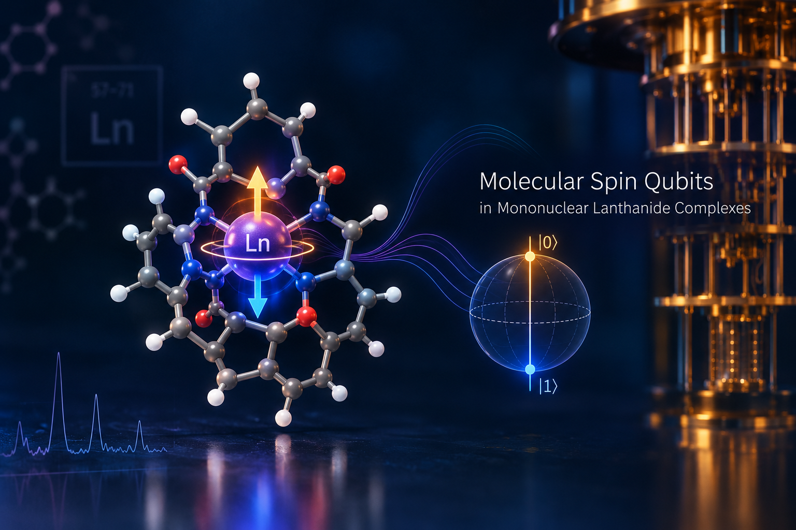

Modelling Spin Qubits in Lanthanide Complexes
Some lanthanide ions behave like tiny magnets whose direction can store a bit of information, or, in a quantum setting, a qubit. Whether that works depends on the exact electronic states of the ion and how its surroundings shape them. I calculate these quantum states so we can see which molecules could hold a magnetic memory and which could serve as spin qubits.
Multiconfigurational electronic structure of lanthanide complexes, including relativistic effects, for magnetic memory and spin-qubit design.
Methods: DFT, MCPDFT

X-ray Spectroscopy for Heavy-Elements
An X-ray can knock an inner electron out of an atom, and the energies absorbed or emitted form a fingerprint of that element's electrons. For heavy elements the fingerprint is hard to compute because several electron arrangements matter at once. I use multiconfigurational calculations to reproduce and interpret these spectra, including L-edge spectra of actinide complexes and valence-to-core spectra of transition metal complexes.
X-ray absorption and emission spectroscopy, multireference methods, L-edge, valence-to-core XES.
Methods: RASCI, RASCI-PDFT, multiconfigurational calculations

Actinide Periodicity
The actinides, from uranium to californium, sit where textbook periodic-table rules start to bend. Their large, fast-moving 5f electrons mean each element can behave differently from its neighbour. I compare element after element with the same ligand, so any difference comes from the metal and not the setup. I look at which oxidation states are stable, how strong the metal-oxygen bonds are, and how much of the bonding is shared electrons.
Relativistic effects and bonding analysis, with ligands such as dipyriamethyrin, pyrrophen and TEQ.
Methods: DFT, relativistic calculations, bonding analysis

Heavy-Elements Separations
Used nuclear fuel holds long-lived metals such as americium and curium that behave much like harmless look-alikes. Separating them cleanly could make waste management simpler. I model ring-shaped molecules that grip one metal more tightly than another, then test which design choices tune that preference, such as swapping in an oxygen or adding an electron-withdrawing group.
Competitive complexation of Am/Cm and Am/Eu, DOTA, and trivalent actinide extraction. Mitacs Globalink project at the University of Manitoba.
Methods: DFT, competitive complexation energetics, bonding analysis

Collaborations
Not every question can be answered from a computer alone. I have teamed up with synthetic and materials groups, using calculations to explain what they see in the lab: corrosion inhibitors for steel, fluorescent probes for ATP, light-emitting molecules, catalysts and the extraction of actinides.
Hirshfeld surfaces, reactivity descriptors, aromaticity and TADF emitters.
Methods: DFT, Hirshfeld surface analysis, reactivity descriptors, aromaticity analysis

Chemical Education
My first papers asked how people learn chemistry. What was online learning like for students in 2020? Does a virtual titration meet their expectations? What do students think about becoming chemistry entrepreneurs? I still teach, and I run science camps because curiosity is easiest to catch early.
Student perspectives, virtual laboratories and service-learning.
Methods: student surveys and perspective studies (no computational methods)